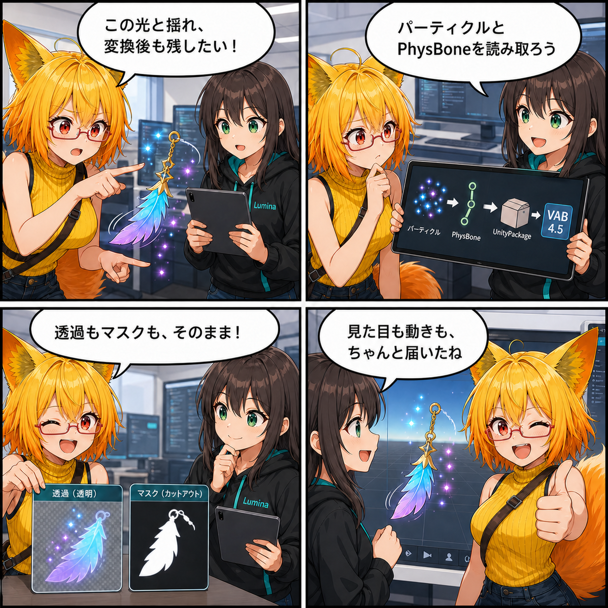

光も揺れも、置いていかない。UnityPackage変換の再現力を高めた日
2026-08-06 の開発日記では、UnityPackageからアバターや小物を取り込んで内部形式へ変換するとき、パーティクルの光、PhysBoneの揺れ、材質の透過やマスク表現をできるだけ元の姿で引き継ぐための更新を取り上げます。読み込めることだけでなく、「見た目と動きが届くこと」へ変換品質を一段深めた一日です。

集計期間には5コミットが入り、集計終了時点の最終HEADは 937d22f（「Fix lilToon alpha mask cutout restoration」）でした。期間直前のコミットから終了HEADまでの差分は57ファイル、5,555行追加、368行削除です。確認時点のViewer作業ツリーはクリーンでした。
今日の主題：変換後にも、光と揺れと材質を残す
UnityPackageには、メッシュやテクスチャだけでなく、光の粒を飛ばすParticle System、髪やアクセサリーを揺らすPhysBone、そしてシェーダー固有の細かな材質設定が含まれます。今回の更新では、これらをViewerの内部形式であるVAB 4.5へ運ぶ経路がまとめて強化されました。
大切なのは、ファイルとして変換できたかだけではありません。パーティクルがどこからどのように出るか、揺れ物がどのボーンに結び付くか、半透明や切り抜きがどう見えるかまで復元されて、初めて元の表現がViewerへ届きます。
Particle SystemをYAMLから読み解く
Unityのテキスト形式に保存されたParticle SystemとParticle System Rendererを読み取る専用パーサーが追加されました。放出、形状、寿命中の色、速度、ノイズ、テクスチャシートアニメーション、Renderer設定などをVAB 4.5のParticleデータへ正規化します。
Prefab内でエフェクト用の階層が欠けている場合の復元や、シーン・Prefab・ローカルキャッシュから内部VABへ変換して読み直す経路も回帰テストで確認されています。Built-in向けのParticle材質はURPのParticle用シェーダーへ整え、通常のアルファ合成だけでなく加算合成の状態も保つようになりました。
PhysBoneのつながりをVAB 4.5へ
PhysBoneでは、ルートや対象ボーンの参照を安定して解決し、VAB 4.5のデータとして保存・復元する経路が強化されました。古い形式からの昇格処理も加わり、揺れ物の設定が内部変換をまたいでも失われにくい構成になっています。
ParticleとPhysBoneは見た目の「動き」を担う部分です。両方を同じ変換パイプラインとテストで扱うことで、静止画では分からないアバターらしさやアイテムの演出まで守れるようにしています。
材質の意図を上書きしない
材質変換では、元シェーダーのプロパティ、キーワード、タグ、Shader Pass、描画順、ブレンド、深度書き込み、両面GI、テクスチャの用途やインポート設定など、元データの意図を記録するSource Material Documentが追加されました。対応するシェーダーを利用できる場合は、保存された描画状態を正本として復元し、変換側の既定値で不用意に上書きしない方針です。
最後の修正では、lilToonの透明材質がアルファマスク置換と深度書き込みを使うケースを、単なる半透明ではなく切り抜き表現として復元する回帰テストが追加されました。細い髪や衣装の抜き部分など、マスクで作られた輪郭を守るための仕上げです。
ほかにも進んだこと
背景とアイテムの正式成果物を置く場所が整理され、デスクトップからUnityPackageを取り込む流れもそれに合わせて更新されました。Converter側では、Viewer本体と変換ツールの仕様を同時に変更するときの整合ルールも明文化されています。
また、マテリアル、テクスチャ、Particle、PhysBoneの各データについて、内部形式の読み書きと実際のUnity上での復元を確認するテストが広く追加されました。今回の5コミット全体では、実装と同じくらい「変換を往復しても意味が残るか」を確かめる検証が大きな割合を占めています。
4コマの裏話
今回は、ろひが光るパーティクルと揺れるアクセサリーを前に「変換後も残したい」と相談するところから始まります。ルミナがParticleとPhysBoneを読み取り、材質の透過やマスクも保持。最後は見た目と動きの両方がViewerへ届く流れです。
今日のまとめ
2026-08-06の記事対象期間では、UnityPackageからVAB 4.5への変換が、Particle Systemの多様なモジュール、PhysBoneの参照、材質の描画状態まで扱えるように強化されました。lilToonのアルファマスク切り抜きも含め、元の表現を変換側の都合で平らにしないための更新です。
取り込み機能の品質は、対応ファイル数だけでは測れません。光が光として、揺れが揺れとして、切り抜きが正しい輪郭として戻ってくること。その積み重ねが、持ち込んだ作品をそのまま楽しめるViewerにつながります。
本日のひとこと
変換は、形だけでなく表現まで運んでこそ。